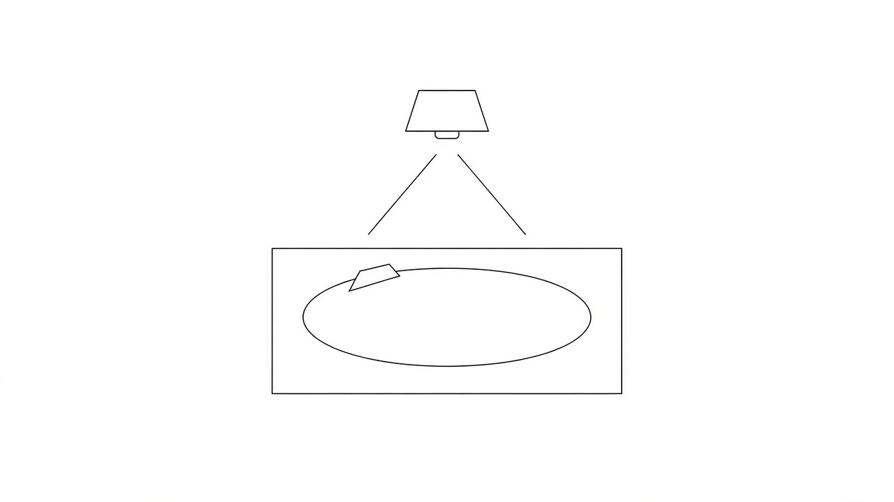
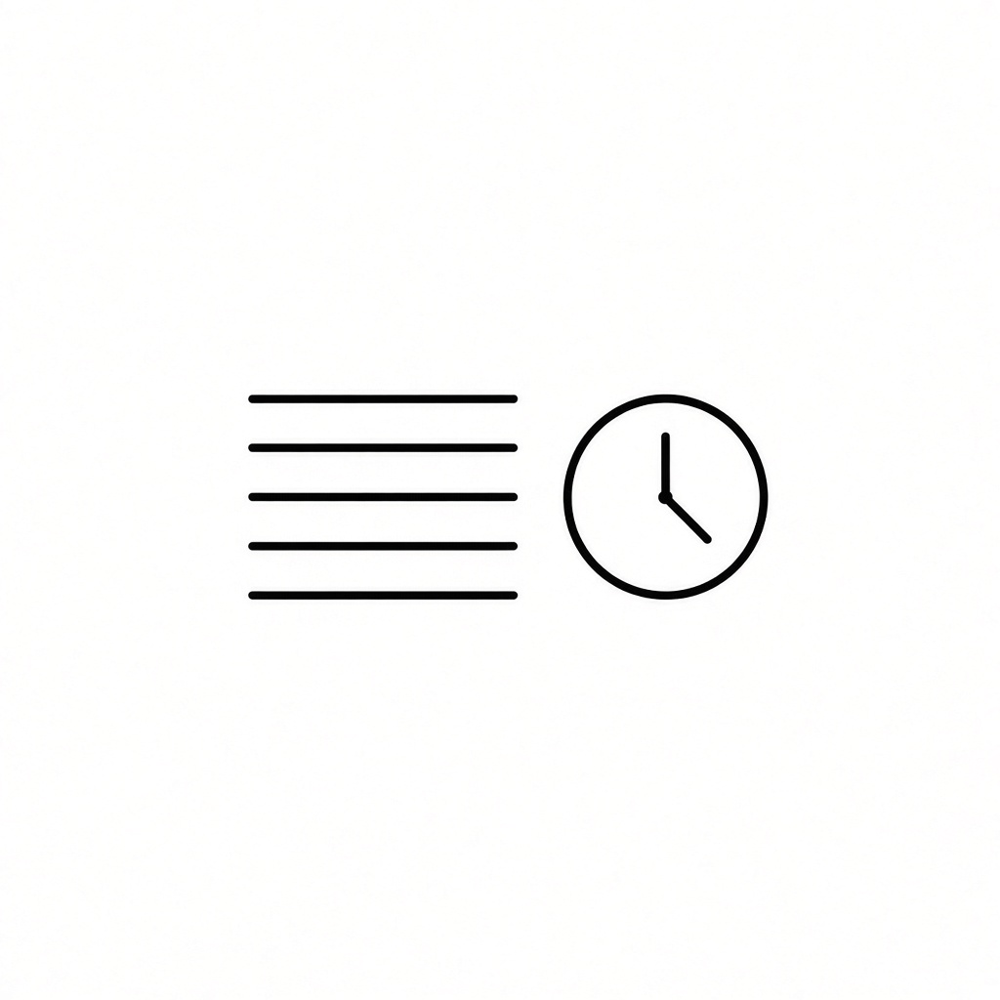

Un tapete, carritos de verdad y una pista de luz. El proyector o el teléfono dibujan el circuito sobre la mesa. Los jugadores mueven el auto con el dedo y la app lleva el turno, las zonas y el orden de tiro.
La app no ve el carrito. Ustedes miran la mesa y marcan lo que pasó: un tiro, un foso, un adelantamiento. La luz solo dice dónde está la regla.

Hacen falta dos jugadores como mínimo y diez como máximo. Cada uno anota su nombre y el auto con el que corre.
El primero de la lista es el primero de la parrilla. Sale delante y, mientras siga delante, tira primero.
Hay tres largos de carrera:
| Circuito | Vueltas | Para qué sirve |
|---|---|---|
| CIRCUITO | 1 | Una vuelta corta con el reglamento completo |
| GRAN CIRCUITO | 2 | La misma idea, con más exactos y lava |
| GRAND PRIX | 3 | La carrera larga: dos de casi todo, y las tres trampas |
Dentro de cada largo hay cinco dibujos de pista: Óvalo, Ocho, Recta, Manzanas y Campeonato. Cada dibujo tiene diez carreras. SIGUIENTE CARRERA pasa a la siguiente. Al acabar las diez, abre el dibujo que sigue, en la misma dificultad.
El auto solo avanza con un capirotazo del dedo índice. No se empuja, no se arrastra y no se acompaña con la mano.
Cada turno trae tres tiros. El botón ¡YA TIRÉ! anota uno. Cuando se acaban, le toca al siguiente.
Si el turno se acaba antes, PASAR TURNO lo cierra. Lo que no se tiró, no se guarda para después.
Para enderezar el auto antes de disparar, solo puede girar sobre su propio eje. Una llanta tiene que seguir en el piso. Levantarlo del todo anula el turno.

Al salir, el primero de la parrilla tira primero. Sigue tirando primero mientras nadie lo adelante.
Cuando todos han pasado su turno, el orden se acomoda a la mesa: tira primero quien va primero en la carrera, luego el segundo, luego el tercero.
Si alguien pasa al frente, en su turno se pulsa VA PRIMERO. No se cuela en el turno que ya empezó. Abre la vuelta siguiente de tiros.
En pantalla se lee el puesto junto al nombre y quién es el 1º de la carrera.
La pista es una cinta del ancho del carril. Hay que quedarse dentro.
Si el auto toca o sale de la línea en cualquier tiro, el turno termina en ese instante. El auto vuelve al punto exacto donde empezó ese turno. No vale el avance a medias.

Solo se marcan las zonas que esa carrera proyecta. El botón aparece cuando la pista las trae.
Tiro exacto. El auto se detiene en la casilla amarilla. La posición se queda ahí y se puede seguir tirando.
Tiro largo. Si el turno termina sobre la flecha verde, el siguiente turno de ese jugador tiene cuatro tiros en lugar de tres.
Trampa de tensión. Hay que cruzar ese tramo en exactamente uno, dos o tres tiros, según diga la trampa. Si el auto se queda dentro al agotar esos tiros, regresa al inicio de esa sección. No es lo mismo que el foso.
Foso. Zona prohibida. El auto no puede caer ahí. Si cae, pierde el turno siguiente. El turno en el que cayó ya se jugó; el castigo es el que viene.
Lava y hielo. Si el auto se detiene en esa luz, el siguiente turno se tira con la mano que no se usa para escribir. La lava y el hielo del paisaje (la luz de toda la mesa) no cuentan: solo la zona marcada en la pista.
Tráfico. Si dos autos quedan pegados, un tiro de esa ronda sirve solo para separarlos, sin mover el del rival.
Takedown. Si con un tiro sacas al rival de la línea, el rival pierde el primer tiro de su siguiente turno. Tu auto se queda donde quedó tras el golpe.
Rebufo. Si dejas tu auto justo detrás del rival, a menos de dos centímetros y sin tocarlo, tu siguiente turno gana un tiro extra.
VAR. Si discuten una línea o la meta, se mira con la cámara. La marca en la app es la que vale.
El proyector tira la pista en color sobre fondo negro, para calcarla con gis.
El paisaje puede seguir el piso:
También se puede fijar a mano: lluvia, hielo, nieve, lava, desierto, bosque o noche. Eso cambia el color de la mesa. No cambia el reglamento.
En un televisor se usa el espejo de pantalla del teléfono o del equipo: AirPlay o Chromecast del sistema. La vista de carrera es la que se manda.

Es otro modo. Aquí no hay tiros de índice. Hay hasta cuatro carriles, vueltas y tiempo.
Cada vuelta, cada récord y el ganador se leen en la pantalla. En el teléfono, la voz del sistema puede decirlos.
El récord queda guardado en esa pista. El resultado de la sesión también.
| En la mesa | En la app |
|---|---|
| El dedo, el auto y si salió de la línea | El conteo de tiros y el cambio de jugador |
| Quién va delante de verdad | VA PRIMERO, para que el siguiente ciclo lo respete |
| Caer en el foso, la lava o el hielo | El castigo del turno que sigue |
| El paso por meta en el slot | El cronómetro y la clasificación |
Si la luz y la mesa no coinciden, se mira el auto. La app anota lo que ustedes confirman.